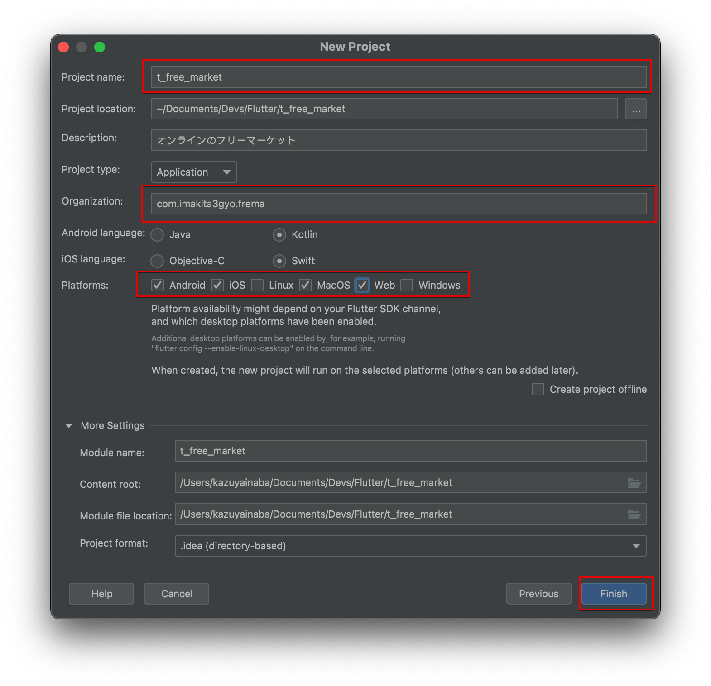

第4章
プロジェクトスタート
Andoroid Studioにて新規Flutterプロジェクトを作成します。
わずか数クリックで実際に実機でも動作するアプリケーションができることに驚きます。
4.1 新規プロジェクトの作成
Android Studioを起動し、[New Flutter Project]ボタンをクリックします。

図4.1:
Flutter SDKの場所を訊かれますので、指定するか選択します。
図4.2:
プロジェクトの名前などを設定します。
- プロジェクト名はハイフンを入れるとメンドウになるのでアンダースコアで。
- Organizationですが、Appleデベロッパーに登録しているIDを使いましょう。
- Platformの選択です。
以上が完了しましたら、[Finish]ボタンをクリックします。

図4.3:
プロジェクトが作成され表示されます。iPhoneシミュレータを起動しデバッグモードで起動します。また、作成したAndroidエミュレータでもデバッグしてみます。
図4.4:
ここまでは、できましたでしょうか？